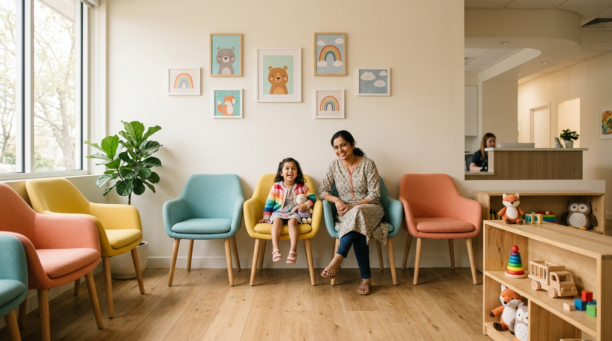
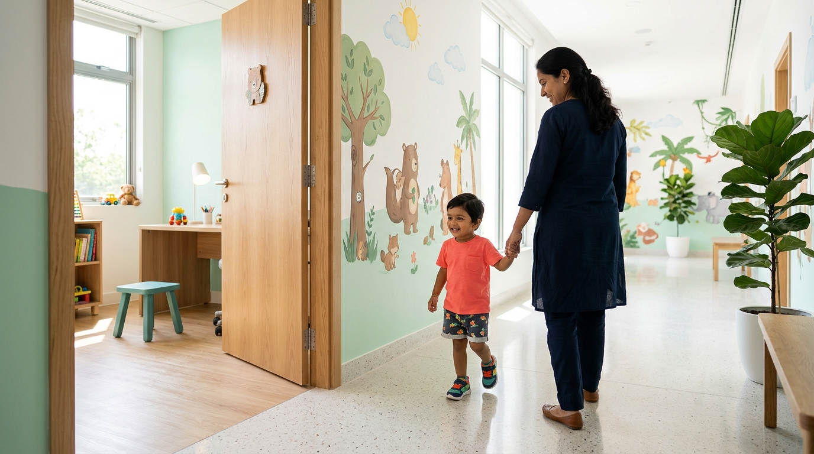

2006
Medical School
Earned medical degree with clinical distinction and child-health focus.
Dedicated to compassionate pediatric care, supporting little ones.


Earned medical degree with clinical distinction and child-health focus.
Completed dedicated hospital residency in newborn and pediatric care.
Advanced specialty training in childhood growth, nutrition, and immunity.
Guided by empathy, clinical excellence, and genuine warmth, we create a calm, child-friendly space where little ones feel safe and parents feel truly supported.
Every visit is thoughtfully designed around your child’s comfort and emotional ease. We listen patiently, speak gently, and turn checkups into positive, stress-free moments.
We believe great pediatric care is a partnership built on trust. We empower parents with clear guidance, honest answers, and continuous support at every milestone.
Extending compassionate pediatric care beyond clinic walls to support healthier schools and thriving families.
Interactive hygiene, nutrition, and wellness sessions conducted for students and teachers at local schools.
Regular neighborhood health camps offering free pediatric checkups, screenings, and preventive care guidance.
Practical parenting talks and guidance on early milestones, balanced diets, and everyday child wellness.
Our clinic is thoughtfully designed to replace clinical worry with curiosity, comfort, and warmth. With cheerful sunlit waiting lounges, playful storybook wall murals, and safe interactive play areas, children feel right at home from the moment they arrive.

